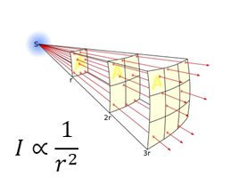

Radar systems are crucial in many roles in military combat aircraft, where locating and tracking enemy units, as well as being detected can be the difference between a mission success or failure. AESA radar systems are a recent advanced development, utilising multiple TR/Ms to track and scan multiple targets simultaneously, as well as overcome various weaknesses of older systems.
I. Introduction
Radar systems are a necessity in modern military combat aircraft, aiding the pilot in communicating between friendly aircraft, and detecting, tracking and engaging hostile air, land and sea targets from within and beyond visual range (BBMF – RAF, 2024; Lockheed Martin Corporation, 2024). In many cases, a more advanced radar suite than an adversary will allow for a pilot to obtain more information, fast, and at longer range, increasing awareness in a combat zone and moving the odds in their favour.
There a multiple classes of radar system, and this article will focus on standard array, Passive Electronically Scanned Array (PESA) and Active Electronically Scanned Array (AESA) radar systems.
II. Types of radar arrays
Standard array radar systems consist of multiple antenna elements, where emitted radio frequencies are emitted in phase, so that they superpose to form radar beams. Radar beams bounce off objects and create a return signal, which is detected by the receiver element of the radar array (Brain, 2024). To scan a wider angle, standard radar array systems must have the entire radar assembly mechanically rotated to point at a different angle, effectively limiting the scan speed of the radar by the mechanical system the radar system is mounted on.
A Passive Electronically Scanned Array (PESA) radar system is a type of radar antenna array, in which the beam of radio waves can be electronically steered in different directions without moving the antenna array assembly. This is achieved with timing wave phases to cause constructive and destructive interference. All antenna elements are connected to a single transmitter / receiver unit. Power from the radar transmitter is passed through a module known as a phase shifter, delaying the signal through each antenna and changing the direction of the resultant beam (MathWorks, 2024).
Electronically Scanned Arrays (ESA) must be multiple wavelengths across to achieve the correct gain for a narrow beamwidth, and therefore to keep ESA systems at a sensible size, the radar must operate at very high frequencies (microwave), where the wavelengths are small. (Visser, 2005; Mini-Circuits, 2023)
Active Electronically Scanned Array (AESA) takes this a step further, in which multiple transmit / receive modules (T/RMs) are present on one radar assembly, allowing the radar to operate on multiple different frequencies simultaneously, as well as scan and track individual entities with each T/RM operating independently.
A T/RM consists of a transmitter, receiver and antenna packed into a module, essentially acting as a scaled down PESA system with fewer antennas. Each T/RM is able generate and transmit its own independent signal at a different frequency, giving AESA systems the capability of utilising multiple simultaneous sub-beams, each individually able to search and track different angles without interfering with one another (as each T/RM is running on a separate frequency) (Leonardo UK, 2024; Real Engineering, 2023, 18:57).
III. Advantages of AESA over PESA and standard radar systems in combat
AESA provides several advantages over other types of radar systems due to its design:
IIIA. Detectability
Radar Warning Receivers (RWR) are defensive radar antennas which detect when an enemy radar beam is on it. RWRs tend to utilise an array of antennas to pinpoint the direction of incoming radiation. Most RWRs (excluding older, directional only RWR systems) store pulses of detected signals and compare them against a database of known radars, and feedback the possible threat type to the pilot, who can act accordingly.
RWRs are at an advantage against traditional radar systems, in that the RWR receives the signal at roughly half the overall distance (as the beam must reflect to the emitter). Radar intensity follows the wave intensity formula.

The RWR however does not initially know the original direction the signal is coming from and must therefore filter the signal over background radio spectrum noise. This is achieved by integrating over a short period of time, which makes periodic radar sources add up and stand out.
This method does not work as well regarding AESA radar, since ESA radars can change their frequency randomly with each individual beam pulse. Integrating over time is useless against a constantly changing frequency, as it will not stand out over background noise. Advanced ESA radars can also control the repetition and duration of the pulse as well as its peak power, making it even harder to detect. Older, and even a few modern RWRs are therefore unable to detect AESA radar systems. (Cluett, 2023; Covert Cabal, 2019)
IIIB. Jamming Resistance
The nature of AESA radars makes jamming much more difficult as well. A typical radar jammer will detect the frequency the radar is operating on and then will transmit a signal in order to confuse the receiver between the return of the aircraft and the signal from the jammer. This method is highly effective against older radar systems, which are unable to easily change their operating frequency in combat. This is also an efficient method of jamming radars, as it can use the full transmit power of the jammer to jam a select frequency,
Most modern ESA radars, however, can change their operating frequency with each pulse, making this type of jamming far less effective.
Radars can be broadly jammed with a method known as barrage jamming. Barrage jamming involves sending out broadband radio noise to jam a large range of frequencies. AESA radars can spread their frequencies across a wide band of frequencies in a single pulse utilising its T/RMs. This means that some T/RM’s beams may be able to still operate outside of the range of jammed frequencies. (Covert Cabal, 2019, 4:25)
IV. Conclusion
In conclusion, AESA radars are a major step up in capabilities over both PESA and traditional radar arrays, providing greatly improved stealth and jamming resistance, as well as advanced independent scanning and tracking abilities.